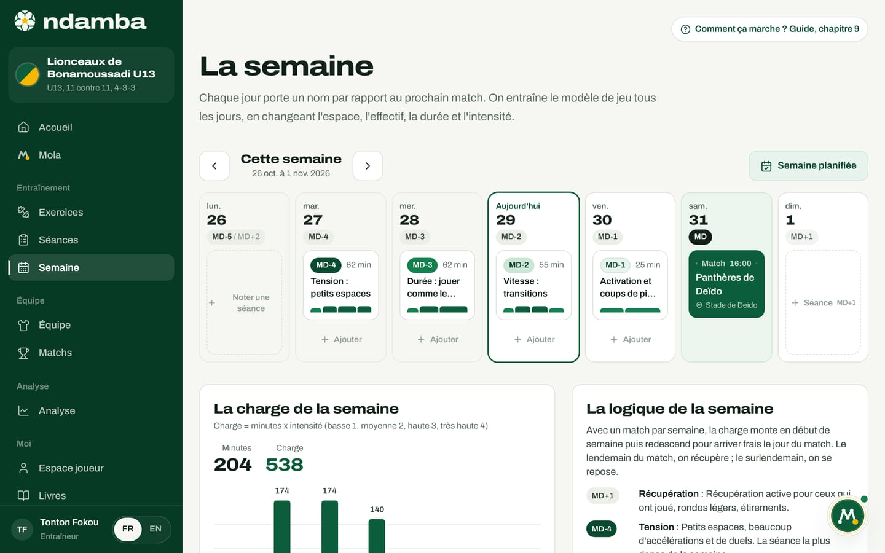

Pourquoi l’Afrique peut gagner la Coupe du monde
Les faits du football camerounais et africain, ce qui manque encore pour franchir la dernière marche, pourquoi un outil commun comme Ndamba répond à ce manque, et les trois Coupes du monde de la fenêtre, en 2030, 2034 et 2038.
10 min de lecture
Ndamba porte une ambition qu’il vaut mieux écrire franchement : qu’une nation africaine, le Cameroun d’abord, porte le trophée de la Coupe du monde dans les quinze prochaines années, en 2030, en 2034 ou en 2038. Une phrase pareille ne convainc personne si elle reste un slogan. Ce chapitre s’adresse d’abord aux investisseurs, aux fédérations et aux ligues. Il pose les faits, vérifiés au 29 octobre 2026, sans les embellir. Il dit ce qui manque encore, selon nous, pour franchir la dernière marche. Il explique pourquoi un outil comme Ndamba répond à ce manque. Et il dit ce que Ndamba ne promet pas.
Ce que le Cameroun a déjà prouvé
Le palmarès des Lions Indomptables tient en quelques lignes, et chacune est une fierté.
| Repère | Le fait |
|---|---|
| Coupes du monde jouées | 8, le record africain : 1982, 1990, 1994, 1998, 2002, 2010, 2014, 2022 |
| Meilleur résultat en Coupe du monde | Quart de finale en 1990, en Italie, le premier quart de finale africain |
| Coupes d’Afrique des nations | 5 titres : 1984, 1988, 2000, 2002, 2017 |
| Jeux olympiques | Médaille d’or à Sydney, en 2000 |
| Coupe des confédérations | Finaliste en 2003 |
L’été 1990 a laissé une image que tout le continent connaît : Roger Milla, 38 ans, marque quatre buts et danse au poteau de corner. Cette image a traversé les générations. Dans le roman Lionceaux, Papa la montre à ses fils, et Kaydoudou refait la danse à chaque but.
Et pourtant, le Cameroun n’était pas à la Coupe du monde 2026, la première à 48 équipes. Deuxième de son groupe de qualification derrière le Cap-Vert en octobre 2025, il a été battu 1‑0 par la RD Congo dans le temps additionnel de la demi-finale des barrages africains, à Rabat, le 14 novembre 2025. Un seul but, au bout du match, a tenu à l’écart du tournoi la nation africaine qui compte le plus de participations.
Ce que l’Afrique a déjà prouvé
Aucune nation africaine n’a encore gagné la Coupe du monde. Le meilleur résultat du continent est la demi-finale du Maroc en 2022, au Qatar, conclue à la quatrième place. En 2026, aux États-Unis, au Canada et au Mexique, le Maroc a été la dernière équipe africaine en course : il a été battu 2‑0 par la France en quart de finale. L’Espagne a gagné la finale 1‑0 après prolongation contre l’Argentine, le 19 juillet 2026. C’est d’ailleurs sur cette finale que s’ouvre Le Code Njangi.
Le Maroc a montré une chose précieuse : une demi-finale, puis un quart de finale quatre ans plus tard. Le haut niveau peut donc se répéter, et pas seulement se toucher une fois. La dernière marche, elle, reste à franchir : aucune nation africaine n’a encore joué de finale.
Ce que disent ces faits
Trois lectures se dégagent, et tout Ndamba repose sur elles.
Le talent n’est pas la question. Un pays qui gagne des titres continentaux sur plus de trente ans, de 1984 à 2017, qui remporte l’or olympique et détient le record africain de participations produit des footballeurs de très haut niveau, génération après génération.
Ce qui manque, c’est la régularité. Le meilleur résultat mondial du Cameroun date de 1990 et n’a pas été dépassé depuis ; en 2026, son absence s’est jouée sur un but. Les grands moments existent, mais ils ressemblent davantage à des pics qu’à une marche que l’on monte.
Ce qui dure finit par se voir. Le meilleur parcours africain de l’histoire, en 2022, a été suivi en 2026 d’un nouveau quart de finale de la même nation.
C’est une lecture, pas une statistique : nous ne prétendons pas expliquer chaque match, ses blessés ou ses décisions d’arbitrage. Mais la thèse est claire. Ce qui manque à l’Afrique, ce n’est pas le talent. C’est la continuité.
Ce qui manque : la continuité
Un même modèle de jeu, de la première académie à l’équipe nationale
Un modèle de jeu, c’est la description écrite de ce que fait l’équipe dans chaque moment du match, traduite en comportements que l’on peut voir, entraîner et mesurer. Si l’académie, le club, les U15, les U17, les U20 et l’équipe A jouent chacun à leur manière, le joueur réapprend le football à chaque étape, et le sélectionneur réunit des joueurs qui n’ont jamais joué la même partition. Une idée qui n’est écrite nulle part s’en va avec l’entraîneur qui la porte.
Des entraîneurs formés dans ce modèle
Un modèle n’existe que s’il est enseigné, avec les mêmes mots, par des centaines d’éducateurs. Le jour où un enfant de 11 ans et un joueur international de 27 ans disent « Fixer » et pensent exactement la même chose, une fédération a déjà gagné quelque chose.
Une mesure commune
Sans mesure commune, personne ne peut vérifier. Le pourcentage de possession dit combien de temps une équipe a eu le ballon, pas ce qu’elle en a fait. Une fédération a besoin d’un chiffre qui lui dise, saison après saison et d’une catégorie à l’autre, si ses joueurs possèdent vraiment avec intention.
Des données qui suivent le joueur
Quand l’histoire d’un joueur (ses séances, ses matchs, ses évaluations, ses objectifs) reste dans le carnet d’un éducateur, elle se perd au premier changement de club ou d’entraîneur. Pour suivre une génération pendant quinze ans, il faut que cette histoire suive le joueur.
La diaspora
Une partie des jeunes qui pourraient porter le maillot national grandissent loin du pays de leurs parents. Les détecter tôt, leur parler avec respect et les faire entrer dans le même modèle de jeu est un chantier à part entière. Le roman Lionceaux en fait son sujet : deux frères camerounais qui grandissent aux États-Unis, en France, en Espagne et en Angleterre.
Pourquoi Ndamba répond à ce manque
Ndamba est un outil de continuité : le même modèle, les mêmes mots et la même mesure, du plus jeune joueur à l’équipe A. Voici ce qui existe aujourd’hui, et ce qui reste à faire.
| Ce qui manque | Ce que Ndamba apporte aujourd’hui | Ce qui reste à faire |
|---|---|---|
| Un même modèle de jeu | Le Code Njangi, en lecture libre, et les mêmes sept mots partout dans l’application : Sortir, Progresser, Fixer, Finir, Respirer, Reprendre, Regarder devant | L’adoption par des clubs, une ligue puis une fédération : ce sont des objectifs (chapitre 23) |
| Des entraîneurs formés | 64 fiches d’exercices, des séances, une semaine organisée autour du match, et Mola qui prépare la semaine ; les livres et les exercices ne sont jamais réservés aux abonnés | Des modules de formation et les premiers entraîneurs Njangi certifiés : prévus |
| Une mesure commune | L’Indice Njangi, calculé en direct à partir de quatorze codes, avec la même formule dans le livre et dans l’application, et la même échelle du U13 aux seniors | Des valeurs de référence par âge, construites à partir des matchs codés : un objectif |
| Des données qui suivent le joueur | La fiche joueur, le parcours, la grille des dix compétences de 1 à 4, les observations | Les comptes et la synchronisation : prévus ; aujourd’hui, les données restent sur l’appareil et se sauvegardent à la main |
| La diaspora | Une plateforme en français et en anglais, dans un simple navigateur, où que l’on vive | La détection de la diaspora avec les sélections de jeunes : un objectif de l’étape 2030 |
| Les plus jeunes | Le roman Lionceaux et ses 40 Leçons du Ballon, dans les mêmes mots que le livre de méthode | Les tomes 2 à 6 : prévus |
La mesure commune se voit dans les deux démos. Les U13 des Lionceaux de Bonamoussadi obtiennent 63,7 contre les Requins de Bépanda, « Njangi en construction ». Les seniors d’Étoile de la Côte obtiennent 67,9 contre Météore de Bafoussam, « Njangi solide ». Ce sont des données de démonstration, mais les cinq sous-indices, la grille de lecture et la formule sont les mêmes. Le Code Njangi rappelle qu’il faut d’abord comparer une équipe à elle-même, et qu’une sélection U15 se situe normalement plus bas qu’une équipe A. Pour une fédération, c’est précisément l’intérêt : le même thermomètre à chaque étage de la pyramide.


La continuité se voit aussi dans la semaine et dans le parcours. La semaine des U13 suit la même logique que celle des seniors, MD-4 Tension, MD-3 Durée, MD-2 Vitesse, MD-1 Activation, avec une charge adaptée à l’âge. Et le parcours d’un joueur rassemble, saison après saison, ses séances, ses matchs, ses observations, ses évaluations et ses objectifs.



Ce que cela change, concrètement
Prenons un exemple, imaginé pour l’illustration. Un garçon de 12 ans entre en 2026 dans une académie qui travaille avec Ndamba. Son éducateur prépare la semaine avec les fiches du livre, code les matchs depuis la touche et lit l’Indice Njangi de l’équipe, en le comparant d’un match à l’autre. La fiche du joueur garde ses séances, ses matchs, ses observations et ses évaluations des dix compétences. S’il rejoint plus tard un club, puis une sélection de jeunes qui suivent la même méthode, son nouvel entraîneur parle les mêmes mots, lui propose les mêmes exercices et lit le même Indice. Rien n’est à réapprendre, tout est à approfondir. Pour que son historique le suive vraiment d’une structure à l’autre, il faudra les comptes et la synchronisation, qui sont prévus.
Trois Coupes du monde dans la fenêtre
La fenêtre de 2026 à 2041 contient trois Coupes du monde :
- 2030 : Maroc, Espagne et Portugal, avec trois matchs du centenaire en Uruguay, en Argentine et au Paraguay. Un pays africain co-organise le tournoi.
- 2034 : Arabie saoudite.
- 2038 : pas encore attribuée en octobre 2026.
S’y ajoute un rendez-vous annuel pour les jeunes : depuis 2025, la Coupe du monde U17 se joue chaque année, à 48 équipes, au Qatar de 2025 à 2029. Chaque édition est un banc d’essai pour un modèle de jeu national.
Les joueurs de ces trois tournois sont déjà nés.
| Âge en 2026 | En 2030 | En 2034 | En 2038 |
|---|---|---|---|
| 12 ans | 16 ans | 20 ans | 24 ans |
| 16 ans | 20 ans | 24 ans | 28 ans |
Un enfant de 12 ans qui entre aujourd’hui dans une académie a 20 ans en 2034 et 24 ans en 2038. BriBri et Kaydoudou, les héros du roman, ont 12 et 10 ans en 2026 : ils auraient 20 et 18 ans en 2034, 24 et 22 ans en 2038.
Un mot sur le mantra. L’application et la couverture du Code Njangi disent « 2030 ou 2034 ». Ce guide parle des quinze prochaines années, qui contiennent aussi 2038. L’ambition ne change pas ; la fenêtre dit honnêtement le temps qu’il faut à une génération pour grandir dans un même modèle.
Le chapitre 23 développe le chemin en cinq étapes, avec des objectifs proposés et non des résultats : le premier cercle (2026 à 2027), la ligue (2028 à 2029), les sélections de jeunes (2030), la génération (2031 à 2034, avec pour objectif un quart de finale ou mieux en 2034) et le trophée (2035 à 2041, avec pour objectif le trophée en 2038).
Ce que Ndamba ne promet pas
- Aucun outil ne gagne une Coupe du monde. Ce sont les joueurs, les entraîneurs, les fédérations, la santé, l’école et l’organisation qui la gagnent. Ndamba rend la continuité possible et visible.
- Aucun partenariat n’est signé à ce jour. Chaque fois que ce guide parle d’une fédération, d’une ligue ou d’un club pilote, il décrit un but.
- Les valeurs de référence de l’Indice Njangi sont des repères internes à la méthode, à calibrer sur ses propres matchs ; ce ne sont pas des moyennes du football mondial.
- Aujourd’hui, les données vivent dans le navigateur de l’appareil, sans compte ni synchronisation, et les paiements ne sont pas encore branchés (chapitres 24 à 26).
Le reste dépend de ce que nous ferons ensemble d’ici là. La devise de Ndamba le dit en deux phrases : « Le ballon doit voyager. Mais il doit savoir où il va. »